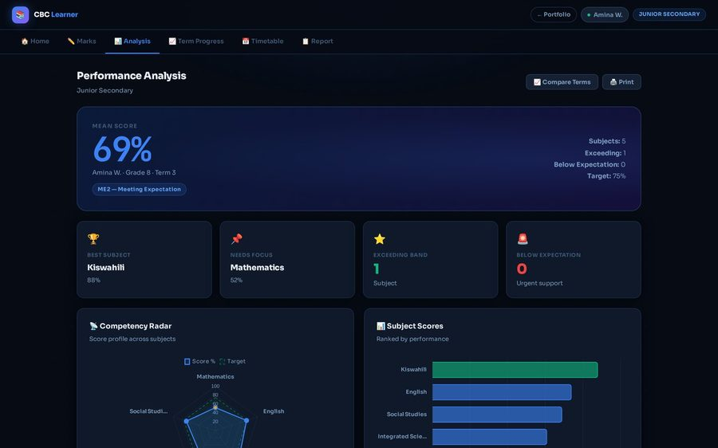
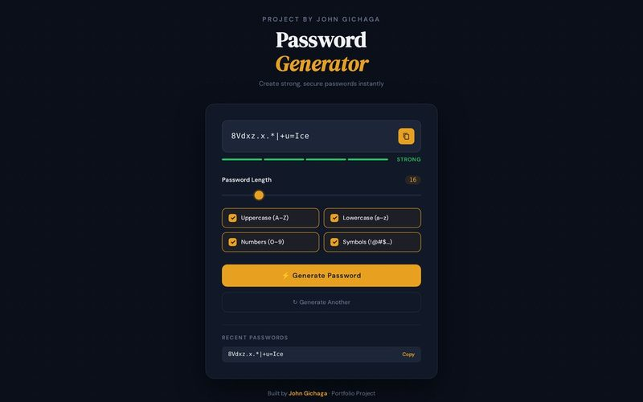
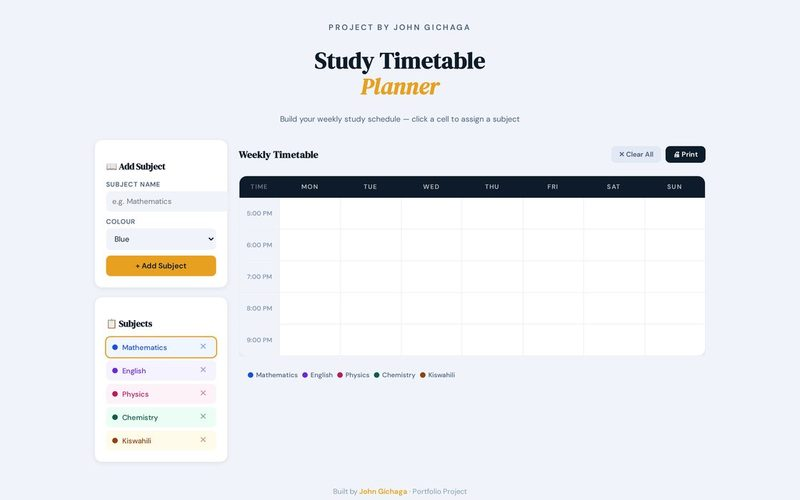
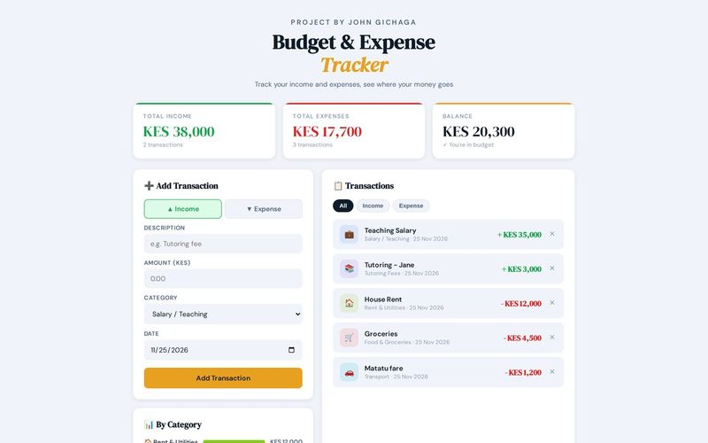

Online Mathematics Tutoring
Individual and small group sessions built around your syllabus, pace, and areas that need practice. You will have worked examples to practise between sessions.
EnquireAvailable for tutoring & freelance projects
Mathematics & Computer Studies educator and freelance technology specialist in Nairobi. I teach the subject, then build the tools that make it easier to learn, teach and run.

About
I am a Mathematics and Computer Studies educator working with secondary school learners in Kenya. My job in the classroom is to make abstract ideas concrete. I found the fastest way to do that is to build what I am explaining.
That habit became a second practice. I design spreadsheet systems and dashboards that help teachers track performance without drowning in paperwork, write small Python and JavaScript tools that remove repetitive work, and provide IT support to schools and small businesses that need someone patient and practical.
Everything on this site is something I built to solve a real problem, often one I encountered while teaching.
Capabilities
I group these by where I use them instead of assigning percentages. They are tools I reach for on real tasks, not badges.
Services
Clear scope, honest timelines, and a handover that leaves you able to run it yourself. Available online and in person around Nairobi.
Individual and small group sessions built around your syllabus, pace, and areas that need practice. You will have worked examples to practise between sessions.
EnquireProgramming fundamentals, hardware, networks, and databases, explained by someone who builds with them every day.
EnquireTemplates, formulas, and automation for schools and small businesses, designed so someone without a technical background can maintain them.
EnquireTurn raw marks, sales or attendance data into a dashboard that answers the question you're actually asking.
EnquireSmall scripts that remove repetitive work, from file processing and report generation to data cleaning and simple scheduling.
EnquireFast, accessible websites and web tools built by hand, like the projects below. No bloated page builders.
EnquireDiagnostics, device setup, software installation, network configuration and patient troubleshooting for homes and small offices.
EnquirePrintable revision material, classroom visuals and digital worksheets designed around the Kenyan curriculum.
EnquireFeatured
Not concept pieces. One is used to track a full class of CBC learners; the other manages student money in a boarding school.

Case studyAn analytics tool for Kenyan CBC assessment that runs in a browser. Enter marks once to get competency levels, subject rankings, term comparisons, and a printable report.
A student account ledger for boarding schools. Teachers hold student funds; every deposit and withdrawal is recorded with a running balance.
Selected work
Every card marked Live opens a working application. Screenshots are of the real tools, captured in use.
CBC assessment analytics for Kenyan schools, with competency bands, radar charts, term comparisons, and printable reports.

LiveGenerates strong passwords based on your chosen length and character rules. It uses the Web Crypto API. Nothing leaves your device.
Math.random(), which is not cryptographically sound.crypto.getRandomValues so every character is uniformly distributed.
LiveArrange subjects on a weekly timetable with slots that each last one hour. It is colour coded, printable, and saved in your browser.
A ledger for boarding schools where teachers hold student funds. Deposits and withdrawals keep a running balance, with CSV export for reconciliation.

LiveIncome and expense tracking with automatic monthly totals, category breakdowns, and printable summaries. Made for freelancers and small businesses.
A set of designed posters and infographics covering core Mathematics and Computer Studies concepts, for classroom display and student handouts.
No projects in this category yet.
Contact
Whether a learner needs a different explanation, a spreadsheet has outgrown itself, or you need a tool that does not yet exist, tell me what you are trying to solve. I will be honest about whether I can help.